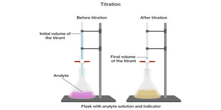

Chất phân tích (chất nghiên cứu)

Image source: Topic 3 image sources
| Vietnamese | Chất phân tích (chất nghiên cứu) / Chất được phân tích / Chất phân tích |
|---|---|
| English | Analyte |
| Pronunciation | /ˈænəlaɪt/ |
| Word type | Danh từ (n.) |
Meaning (Vietnamese)
Chất phân tích (chất nghiên cứu)
Meaning (English)
The substance being analyzed in an analytical procedure.
Example
The analyte is introduced into the mass spectrometer.
Chất phân tích được đưa vào máy phổ khối lượng.
Another definition from the notes
Chất được phân tích trong một quy trình phân tích.
The substance being analyzed in an analytical procedure.
Source of information: Topic 3 notes (see Sources)